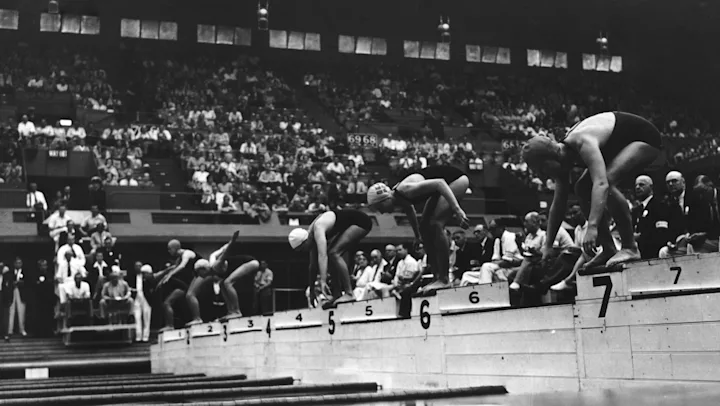
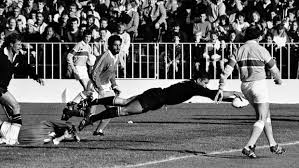
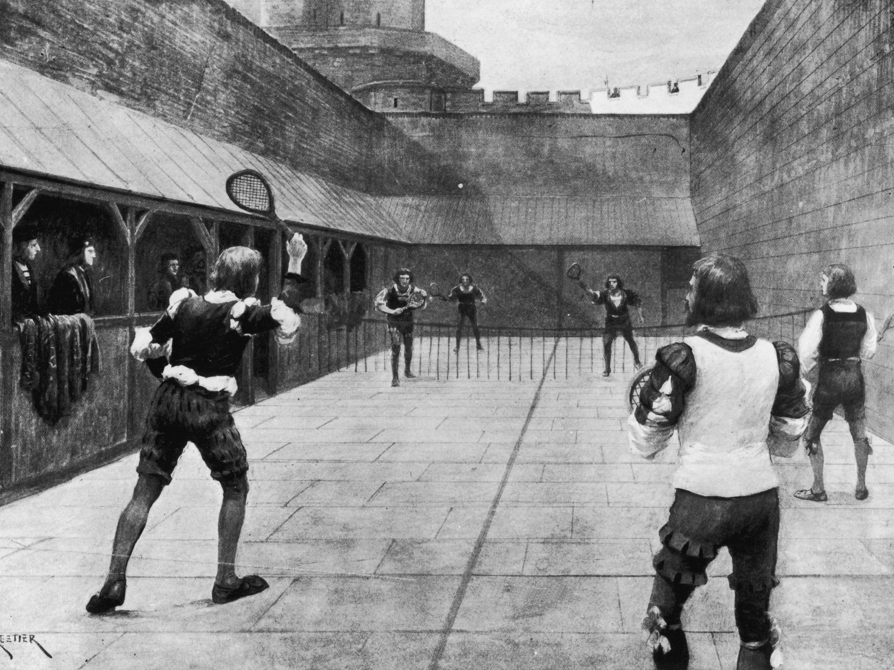

Here we go through the History of the sports we are specialized and most interested in. If you would like to skip to any specific sport's History please use the links provided below
Football (or soccer as the game is called in some parts of the world) has a long history. Football in its current form arose in England in the middle of the 19th century. But alternative versions of the game existed much earlier and are a part of the football history.
Early history and the precursors of football
The first known examples of a team game involving a ball, which was made out of a rock, occurred in old Mesoamerican cultures for over 3,000 years ago. It was by the Aztecs called Tchatali, although various versions of the game were spread over large regions. In some ritual occasions, the ball would symbolize the sun and the captain of the losing team would be sacrificed to the gods. A unique feature of the Mesoamerican ball game versions was a bouncing ball made of rubber – no other early culture had access to rubber.
The first known ball game which also involved kicking took place In China in the 3rd and 2nd century BC under the name cuju. Cuju was played with a round ball (stitched leather with fur or feathers inside) on an area of a square. A modified form of this game later spread to Japan and was by the name of kemari practiced under ceremonial forms.
Perhaps even older cuju was Marn Gook, played by Aboriginal Australians and according to white emigrants in the 1800s a ball game primarily involving kicking. The ball was made by encased leaves or roots. The rules are mostly unknown, but as with many other early versions of the game keeping the ball in the air was probably a chief feature.
Other variety of ball games had been known from Ancient Greece. The ball was made by shreds of leather filled with hair (the first documents of balls filled with air are from the 7th century). Ball games had, however, a low status and was not included at the Panhellenic Games. In the Ancient Rome, games with balls were not included in the entertainment on the big arenas (amphitheaters), but occurred in exercises in the military by the name of Harpastum. It was the Roman culture that would bring football to the British island (Britannica). It is, however, uncertain in which degree the British people were influenced by this variety and in which degree they had developed their own variants.
The History of Swimming

Evidence of recreational swimming in prehistoric times has been found, with the earliest evidence dating to Stone Age paintings from around 10,000 years ago. Written references date from 2000 BC, with some of the earliest references to swimming including the Iliad, the Odyssey, the Bible, Beowulf, the Quran and others. In 1538, Nikolaus Wynmann, a Swiss–German professor of languages, wrote the earliest known complete book about swimming, Colymbetes, sive de arte natandi dialogus et festivus et iucundus lectu (The Swimmer)
Swimming emerged as a competitive recreational activity in the 1830s in England. In 1828, the first indoor swimming pool, St George's Baths was opened to the public. By 1837, the National Swimming Society was holding regular swimming competitions in six artificial swimming pools, built around London. The recreational activity grew in popularity and by 1880, when the first national governing body, the Amateur Swimming Association was formed, there were already over 300 regional clubs in operation across the country.
The routes taken by Webb and T.W. Burgess across the English Channel, in 1875 and 1911, respectively.
In 1844 two Native American participants at a swimming competition in London introduced the front crawl to a European audience. Sir John Arthur Trudgen picked up the hand-over stroke from some South American natives and successfully debuted the new stroke in 1873, winning a local competition in England. His stroke is still regarded as the most powerful to use today.
Captain Matthew Webb was the first man to swim the English Channel (between England and France), in 1875. Using the breaststroke technique, he swam the channel 21.26 miles (34.21 km) in 21 hours and 45 minutes. His feat was not replicated or surpassed for the next 36 years, until T.W. Burgess made the crossing in 1911.
Other European countries also established swimming federations; Germany in 1882, France in 1890 and Hungary in 1896. The first European amateur swimming competitions were in 1889 in Vienna. The world's first women's swimming championship was held in Scotland in 1892.
The History of Cricket
In the first half of the 18th Century cricket established itself as a leading sport in London and the south-eastern counties of England. Its spread was limited by the constraints of travel, but it was slowly gaining popularity in other parts of England and Women’s Cricket dates back to the 1745, when the first known match was played in Surrey.
In 1744, the first Laws of Cricket were written and subsequently amended in 1774, when innovations such as lbw, a 3rd stump, - the middle stump and a maximum bat width were added. The codes were drawn up by the “Star and Garter Club” whose members ultimately founded the famous Marylebone Cricket Club at Lord's in 1787. MCC immediately became the custodian of the Laws and has made revisions ever since then to the current day.
Rolling the ball along the ground was superseded sometime after 1760 when bowlers began to pitch the ball and in response to that innovation the straight bat replaced the old “hockey-stick” style of bat. The Hambledon Club in Hampshire was the focal point of the game for about thirty years until the formation of MCC and the opening of Lord's Cricket Ground in 1787.
Cricket was introduced to North America via the English colonies as early as the 17th century, and in the 18th century it arrived in other parts of the globe. It was introduced to the West Indies by colonists and to India by British East India Company mariners. It arrived in Australia almost as soon as colonisation began in 1788 and the sport reached New Zealand and South Africa in the early years of the 19th century.
The History of Rugby

Rugby is said to have originated at Rugby School in Warwickshire, England, in 1823 when during a game of football, William Webb Ellis decided to pick up a ball and go with it. Although there is very little evidence to support this theory, the Rugby World Cup Trophy is now named after William Webb Ellis. In 1863 a collection of boarding schools and clubs decided upon a rule set and 1871 Rugby Football Union was officially formed. That same year, the first ever international match was played between England and Scotland with Scotland taking the win 1-0.
In 1900, rugby union was introduced to the Summer Olympics by Pierre de Coubertin, who had previously refereed the first French domestic championship as well as France's first international game. France, Germany and Great Britain all entered teams for the oplympics, and France won gold by defeating both opponents.
Rugby actually drew the largest crowd at that particular games - it was next played at the 1908 games in London, with Australia winning, by defeating Great Britain.
Even though rugby drew some of the biggest crowds at the games, it was eventually dropped in 1924.
By 1908 all three major Southern Hemisphere nations (New Zealand, Australia and South Africa) had formed teams and sent them on international trips to play against the Northern Hemisphere nations. As a side fact, the first time the Haka was performed by New Zealand prior to a match was in 1905, which the Welsh responded to by having Teddy Morgan sing the Welsh national anthem. Soon enough the crowd joined in, which was the first time a national anthem was sung prior to a sporting event.
The first Rugby World Cup was played in 1987 and was held in Australia and New Zealand - both semi-finals were played in Australia while the final was played in New Zealand, with the All Blacks defeating France in the final.
The History of Tennis

Tennis, original name lawn tennis, game in which two opposing players (singles) or pairs of players (doubles) use tautly strung rackets to hit a ball of specified size, weight, and bounce over a net on a rectangular court. Points are awarded to a player or team whenever the opponent fails to correctly return the ball within the prescribed dimensions of the court. Organized tennis is played according to rules sanctioned by the International Tennis Federation (ITF), the world governing body of the sport.
Tennis originally was known as lawn tennis, and formally still is in Britain, because it was played on grass courts by Victorian gentlemen and ladies. It is now played on a variety of surfaces. The origins of the game can be traced to a 12th–13th-century French handball game called jeu de paume (“game of the palm”), from which was derived a complex indoor racket-and-ball game: real tennis. This ancient game is still played to a limited degree and is usually called real tennis in Britain, court tennis in the United States, and royal tennis in Australia.
The modern game of tennis is played by millions in clubs and on public courts. Its period of most rapid growth as both a participant and a spectator sport began in the late 1960s, when the major championships were opened to professionals as well as amateurs, and continued in the 1970s, when television broadcasts of the expanding professional tournament circuits and the rise of some notable players and rivalries broadened the appeal of the game. A number of major innovations in fashion and equipment fueled and fed the boom. The addition of colour and style to tennis wear (once restricted to white) created an entirely new subdivision of leisure clothing. Tennis balls, which historically had been white, now came in several hues, with yellow the colour of choice. Racket frames, which had been of a standard size and shape and constructed primarily of laminated wood, were suddenly manufactured in a wide choice of sizes, shapes, and materials, the most significant milestones being the introduction of metal frames beginning in 1967 and the oversized head in 1976.
The first international team competition was the Davis Cup, officially called the International Lawn Tennis Challenge Trophy, which was donated by U.S. doubles champion Dwight Davis in 1900. Only Great Britain challenged the first year; it was defeated by the United States, Davis himself playing on the victorious team. There was no challenge in 1901, but in 1902 a strong British team that included the Doherty brothers went to America. The United States retained the trophy, but the following year the Doherty brothers helped Britain win the cup, which it retained the next three years.